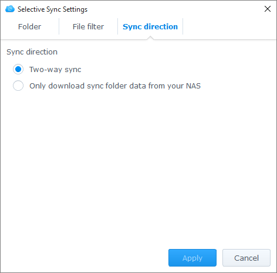

总览
用于 Synology NAS 的 Cloud Station 是一款文件同步应用程序，该程序可让您轻松与其它设备（如计算机或带 DS cloud 的移动设备）同步 Synology NAS 上的文件。在 Synology NAS 上安装 Cloud Station Server 并在计算机上安装 Cloud Station Drive，可自动将存储在计算机上的文件同步到 Synology NAS。
在 Synology NAS 与计算机之间建立连接
- 进入套件中心，找到 Cloud Station Server，然后单击安装。
- 启动 Cloud Station Server。
- 在概述选项卡中，单击 Cloud Station Drive 下的 按钮为您的操作系统下载 Cloud Station Drive。(您还可从 Synology 下载中心下载 Cloud Station。)
- 启动计算机上的安装程序并按屏幕说明安装 Cloud Station。
- 安装后，在计算机上运行 Cloud Station。单击立即开始。
- 输入运行 Cloud Station 的 Synology NAS 地址（或 QuickConnect ID）、用户名和密码。您可单击右侧的搜索图标来搜索 LAN 中的 IP 地址。单击下一步。
- 单击编辑图标选择要在 Synology NAS 和计算机上同步的文件夹。然后，您可单击高级以配置同步设置。
- 取消勾选任何不要同步的文件夹。
- 设置文件大小上限或黑名单文件名以使这些文件不被同步。
- 选择是否双向同步或仅下载来自 Synology NAS 的数据。 
- 单击完成完成设置。
- 您可在系统托盘中找到 Cloud Station 图标。
- 单击系统托盘可打开托盘菜单。您可在此查看进程和文件的状态。您可在此查看进程和文件的状态。单击主应用程序可打开 Cloud Station。
- 启动进，将显示如何使用 Cloud Station 的一些提示。单击向右箭头可看到更多提示，或单击在线教程以获得更多信息。如果您不需要提示，勾选不要再显示此信息旁的复选框。
- 现在您可以在Cloud Station Drive 中管理您的同步任务。


下载同步文件的旧版本
- 单击系统托盘中的 Cloud Station Drive 图标，然后单击该文件夹图标。
- 右键单击您选择的文件，然后选择 Synology Cloud Station > 浏览以前的版本。
- 找您要下载的版本并单击下载图标。


下载或还原 Cloud Station Server 上同步文件的旧版本
- 进入 Cloud Station Server> 版本历史并找到您要还原的文件或文件夹。
- 选择您要检索的文件，然后单击操作 > 浏览以前的版本。
- 选择您要下载的文件版本，并单击下载。或者，如果您确认要还原选择的版本，单击还原，它将覆盖当前版本。


注意事项
- 以防文件被意外删除或覆盖，请始终保留历史版本。
- 在 Global Settings ，您可配置当 PC 上的文件删除时从 NAS 重取还是在 NAS 上删除。
将数据同步到您的移动设备
DS cloud 可在 Apple App Store 和 Google Play Store 中免费获得。您还可以扫描下面的二维码直接下载。